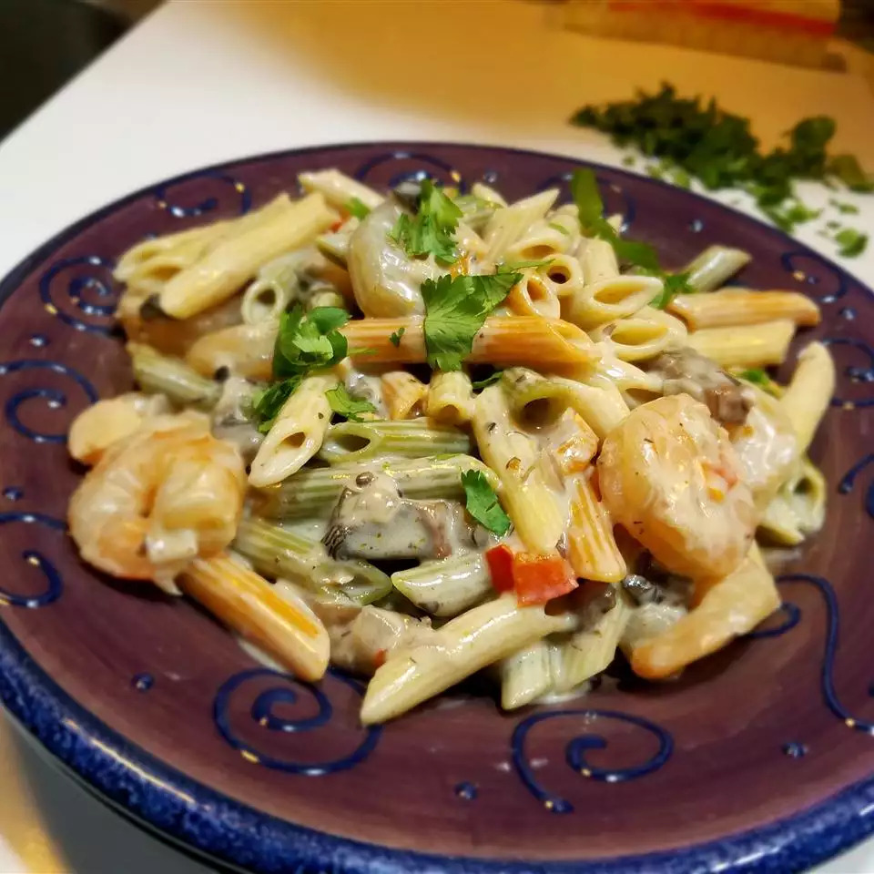

Shrimp Alfredo

Garlicy shrimp alfredo
Alfredo? Check. Shrimp? Check. Plenty of garlic? Check.
Ingredients
- 12 ounces penne pasta
- 1/4 cup butter
- 2 tbsp olive oil
- 1 onion, diced
- 2 cloves garlic, diced
- 1 red bell pepper, diced
- 1 pound medium shrimp, peeled and deveined
- 1 15oz Alfredo Sauce
- 1/2 cup Romano cheese
- 1/2 cup cream
- 1 tspn cayenne pepper
- Salt + pepper to taste
Steps
- Bring large pot of lightly salted water to a boil. Add pasta and cook for 8-10 minutes or until al dente; drain.
- Melt butter with the olive oil in a saucepan over medium heat. Stir in onion and cook until softened and translucent. Stir in garlic, red pepper, and mushroom; cook over medium heat until soft.
- Stir in the shrimp, cook until firm and peak. Pour in Alfredo sauce, Romano cheese, and cream. Bring to a simmer, stirring constantly until thickened. Season with cayenne, salt, and pepper to taste. Stir in drained pasta.